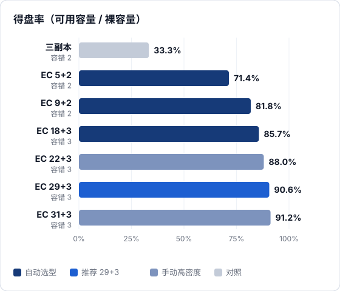
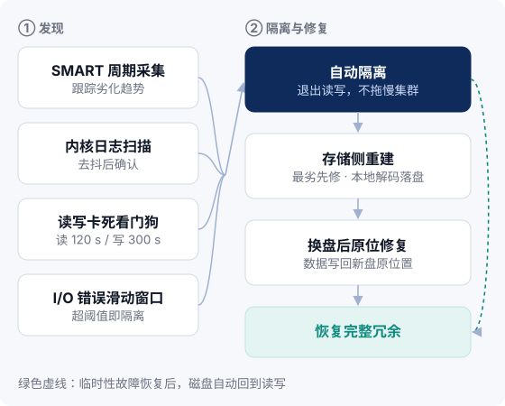
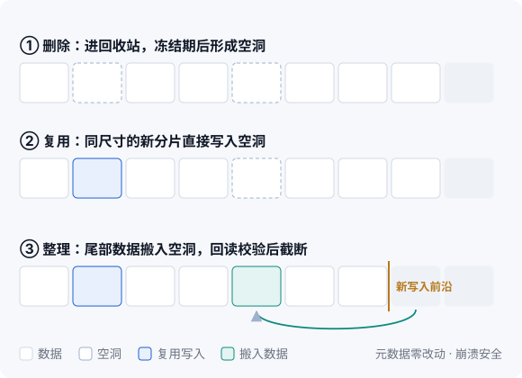
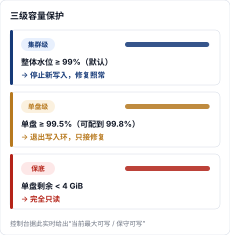
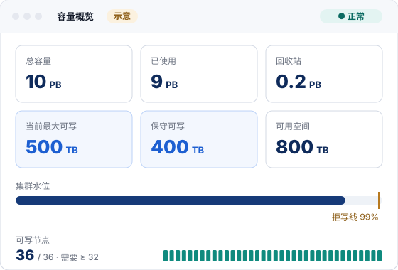

放置约束与放置审计
同一条带的分片绝不落在同一节点。写入、修复、均衡三条路径都强制校验，后台全量放置审计持续巡检，冗余不会被悄悄"做薄"。
Reed-Solomon 纠删码提供冗余，放置约束保证冗余真实有效，四层健康监测与存储侧重建让集群在故障后自行回到完整状态。
每个 256 MB 数据块编码为一条条带，数据分片加校验分片分散写到不同节点。集群按节点数自动选择保守安全的档位；规模足够时也可手动指定更高密度的档位。

| 档位 | 选型方式 | 得盘率 | 容错 | 最少节点 |
|---|---|---|---|---|
| EC 5+2 | 自动 | 71.4% | 2 | 8 |
| EC 9+2 | 自动 | 81.8% | 2 | 12 |
| EC 18+3 | 自动 | 85.7% | 3 | 22 |
| EC 22+3 | 手动 | 88.0% | 3 | 26 |
| EC 29+3 | 自动 | 90.6% | 3 | 33 |
手动高密度档位另有 19+3、21+3、31+3（得盘率 91.2%）；31+2 只有 2 个校验分片，容错下降，需谨慎使用。
同一条带的分片绝不落在同一节点。写入、修复、均衡三条路径都强制校验，后台全量放置审计持续巡检，冗余不会被悄悄"做薄"。
每次读取都核对条带 ID 与分片序号，即使发生错误路由，也不会把别的数据当成本条带的分片返回。
定期通读分片并校验 CRC，主动发现静默损坏。巡检可限速（默认每节点 20 MB/s）、周期可调，不与业务争抢磁盘。
坏盘往往不是"突然坏掉"，而是先变慢、报错、卡住。KDSS 从四个层面同时观察每块盘，越早发现，越少影响业务。

修复由存储节点在本地完成：拉取存活分片、本地解码、直接落盘，减少中转流量。任务按缺失分片数排序，最危险的条带最先修；数十万条带可在分钟级批量入队，由多台 Master 分布式领取。
换上新盘后，把原来属于这块盘的数据写回新盘的原位置，数据布局与换盘前保持一致。
删除先进回收站，误删可以恢复；GC 分两阶段执行，保留窗口可配置。另提供孤儿分片的只读对账工具，便于核实空间去向。
显式触发的跨节点均衡按偏离均值的阈值挑选源节点、把分片迁往最空的合规目标，迁移前双重查重并做版本校验；节点内也可在盘间均衡。
存储节点把每块 HDD 当作一条顺序追加的日志来写。没有文件系统这一层，写入路径更短，磁头寻道更少，故障时也更容易恢复。
所有写入顺序追加、4 KB 对齐。减少寻道，吞吐稳定，有利于延长硬盘寿命。
主、备两份超级块各带 CRC。每块盘记录自己所属的节点 ID、盘 ID 与 UUID：换槽位、换盘符后启动自动识别纠正，接错盘则拒绝启动。
本地索引使用 BadgerDB。每次读取都做 CRC32 校验，流式读取同样逐段校验，损坏的数据不会被当作正常数据返回。
干净关机后秒级启动。异常断电时，引擎从写入前沿向前扫描补齐索引；整理过程被中断时，可整盘重建索引。所有磁盘并行打开，节点重启不必逐盘等待。
落盘策略按硬件条件三档可选，默认最稳妥。
| fsync 策略 | 行为 | 适用场景 |
|---|---|---|
immediate 默认 | 每次写入立即落盘 | 通用，最稳妥 |
batch | 组提交，合并多次写入一起落盘 | 希望减少落盘次数的写入密集场景 |
deferred | 后台每 5 秒落盘；断电可能丢失最近约 5 秒的写入 | 有掉电保护（如带 BBU 的阵列卡）且可接受该窗口的场景 |
删除是软删除：数据先进入回收站，经过可配置的冻结期后才释放为空洞。之后，尺寸完全相同的新分片可以直接写进空洞，精确匹配，不产生碎片。

磁盘写满是存储系统最常见的事故之一。KDSS 设置三道逐级收紧的防线：先停新写入、保留修复能力，再让单盘退出写入环，最后在极限处转为只读，任何一级都不会让修复无处可写。

同一个集群同时提供 POSIX 文件挂载与 S3 兼容接口。生产环境中约 99% 的读写走 FUSE 客户端。
把集群挂载成本地目录，现有程序无需改造即可读写。
df -h 直接显示集群真实容量兼容核心 S3 API；已验证客户端：AWS CLI、boto3、s3cmd（按文档配置）。
| 类别 | 操作 |
|---|---|
| Bucket | ListBuckets · CreateBucket · DeleteBucket · HeadBucket · ListObjectsV2 |
| 对象 | PutObject · GetObject（含 Range）· HeadObject · DeleteObject · CopyObject |
| 分段上传 | CreateMultipartUpload · UploadPart · CompleteMultipartUpload · AbortMultipartUpload · ListParts · ListMultipartUploads |
未列出的 API（如版本控制、生命周期、对象锁）当前不提供。完整说明见 文档 · S3 接口。
# Point the CLI at the KDSS S3 gateway # 让 AWS CLI 指向 KDSS S3 网关（端口 9000） export EP=http://s3.example.internal:9000 aws --endpoint-url $EP s3 mb s3://archive aws --endpoint-url $EP s3 cp ./dataset.tar s3://archive/2026/ aws --endpoint-url $EP s3 ls s3://archive/2026/
Web 控制台、内置告警与 Prometheus 指标覆盖日常运维；Master 多副本选主与滚动升级让维护操作对业务透明。
控制台基于 Vue 3 与 Element Plus，覆盖集群、节点、磁盘视图，Bucket 与访问密钥，文件浏览，告警规则与渠道，审计日志与用户管理。
容量面板不只显示"剩余空间"。它综合拒写线、各节点余量与纠删码放置约束，实时给出当前最大可写与保守可写，回答"现在还能真正写进多少数据"。

P0 / P1 / P2 三级，带去抖与提醒间隔，通过飞书（Lark）与邮件推送，保留告警历史。
全量指标统一在 kdss_* 命名空间，/metrics 支持 Bearer 令牌认证。随版本提供 63 条告警规则模板，可直接接入现有监控体系。
典型部署 5 台 Master，配合 MongoDB 副本集多数派写入选主。Leader 切换自动完成，客户端写请求自动重定向到新 Leader。
升级默认逐台进行。每台节点先进入维护模式，等在途写入清零后再替换和验证，确认无误才恢复服务。
节点不再接收新的写入分配。
已开始的写入全部完成后再动手。
更换程序版本，检查节点与磁盘状态。
恢复写入，继续下一台节点。
KDSS 通常部署在内网。在此基础上，控制台、指标接口与节点间通信都提供了相应的认证与防护手段。
内置 admin、storage_admin、readonly 三种角色，按职责分配权限，不同岗位只拿到需要的操作范围。
JWT 会话、bcrypt 存储口令，登录限速与验证码抵御暴力尝试，并启用 CSRF 防护。
/metrics 支持 Bearer 令牌认证，只有授权的采集端才能读取集群指标。
组件之间的 gRPC 通信可启用双向 TLS；纯内网部署也可以关闭以简化运维。
S3 请求使用 AWS SigV4 签名；访问密钥在控制台集中创建与管理。
控制台的审计日志记录管理操作，便于事后追溯。
告诉我们数据规模、访问方式与机房条件，我们会给出节点数量、纠删码档位与硬件配置建议。